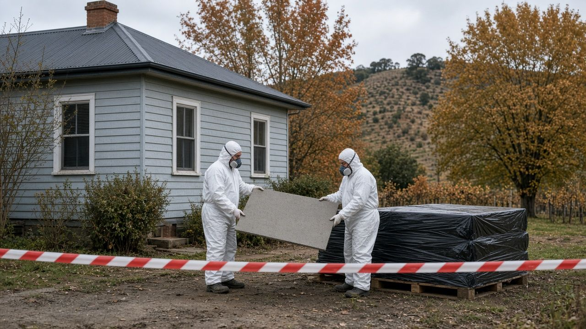
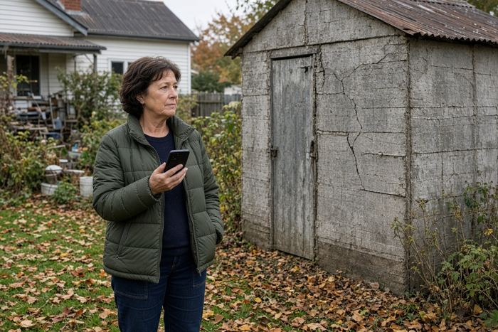
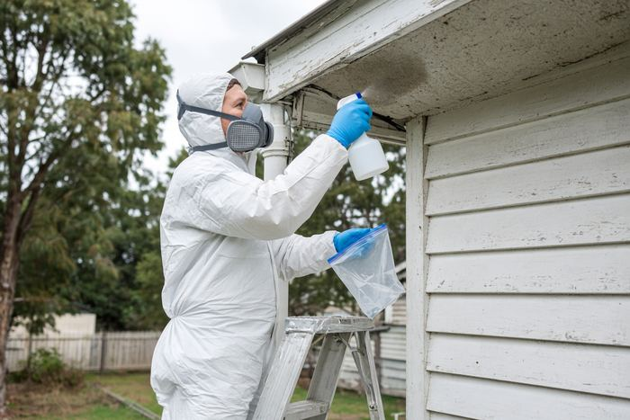
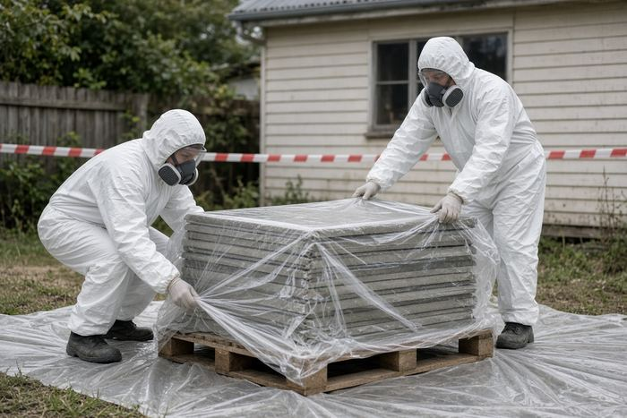
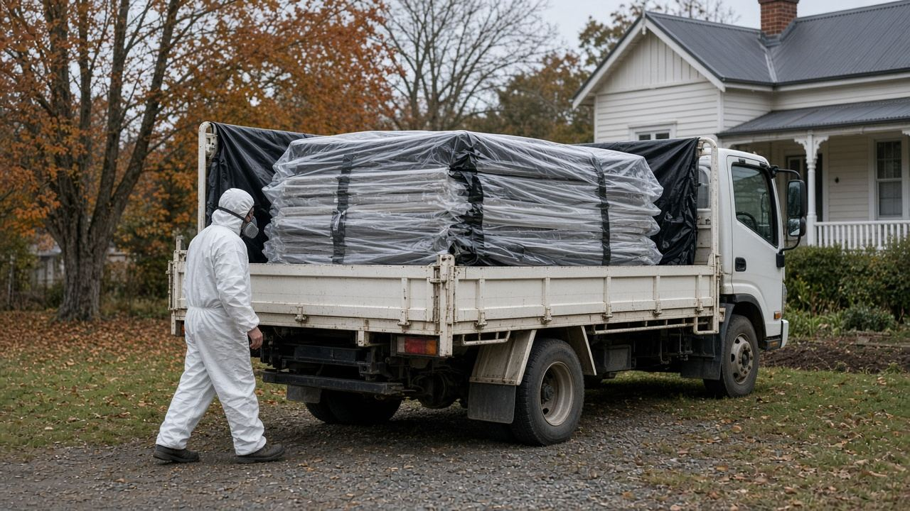
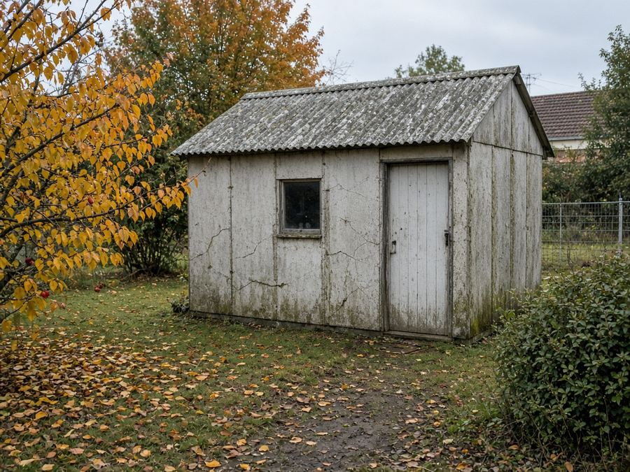
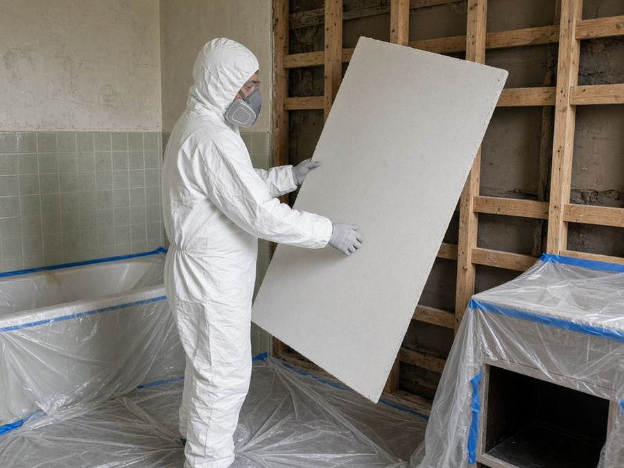
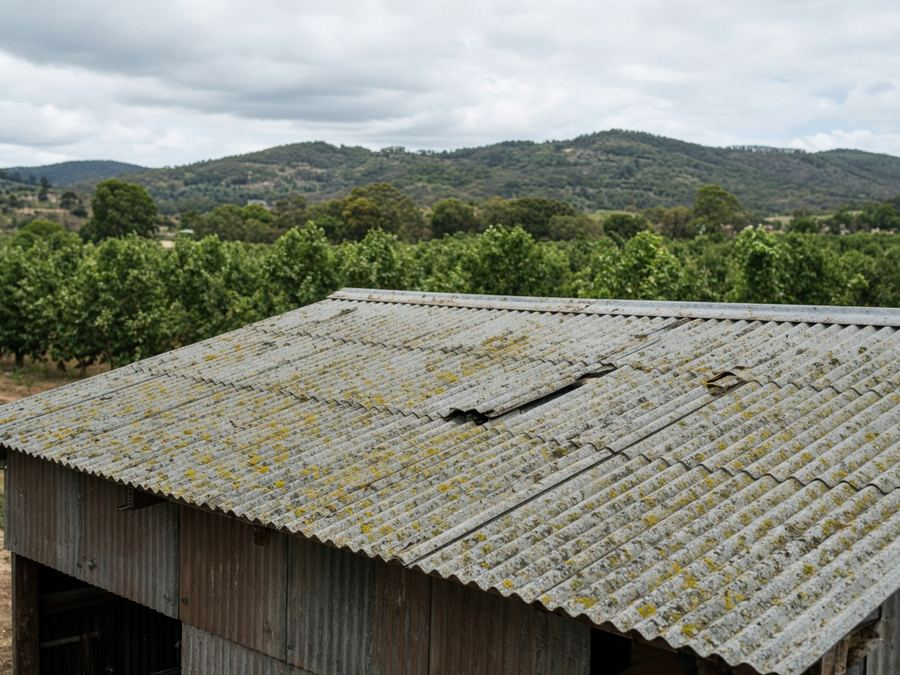
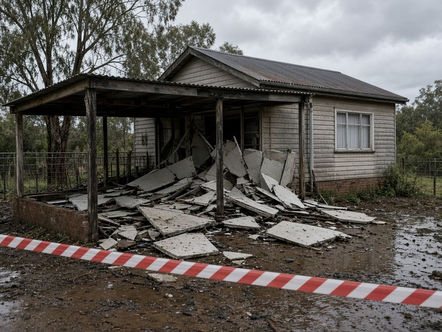
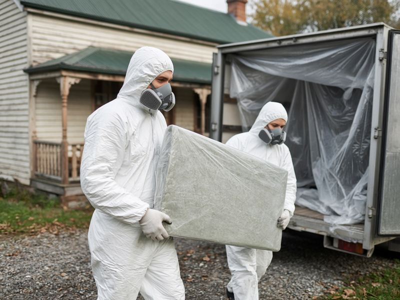

Asbestos Removal Orange: Free Quotes From a Licensed Local Removalist
Pulling down a fibro shed in Glenroi, renovating a 1960s bathroom in Bowen or worried about an old roof in Millthorpe? Tell us what you've found and we'll pass it to one licensed asbestos removalist who services Orange for a free, no-obligation quote.
Updated 23 October 2026
Get a free asbestos quote in Orange
- Free quote from a licensed removalist
- One local business, not a call-centre auction
- Orange, Millthorpe, Blayney, Molong and surrounds
- No obligation to book
How it works

1Tell us what you've found
Choose your suburb, what you need and the property type in the quote form. Photos and rough sizes help.

2A licensed local removalist reviews it
We pass your request to one licensed asbestos removalist or assessor who works in the Orange area. They may ask for photos or a site visit.

3You get a quote and a plan
They explain what licence the job needs, how it will be done safely, and the price. Book only if you're happy.
Orange Asbestos Removal is a referral and quote service run by Raf Web Studio. We are not an asbestos removalist and we don't hold an asbestos licence. Every job is quoted and carried out by an independent, licensed local business. Always check their licence before work starts.
Asbestos services in Orange
Orange has plenty of post-war fibro homes, sheds and farm buildings. These are the services people most often ask about. The licensed business that quotes you confirms what it can do.
Bonded asbestos removal (Class B)
Fibro walls, eaves, sheds, fences and asbestos-cement roofing over 10 m², removed by a Class B or Class A licensed removalist.
Friable asbestos removal (Class A)
Pipe lagging, loose insulation, vinyl backing and badly damaged sheeting. Only a Class A licence holder can do this work.
Testing and inspection
Sampling of suspect material with analysis at an accredited lab, plus inspections before you buy, renovate or demolish.
Asbestos roof removal
Old corrugated asbestos-cement roofs on houses, garages and orchard sheds, usually followed by re-roofing by a separate trade.
Clearance after removal
After licensed removal, a clearance inspection confirms the area is safe to re-occupy. Friable work also needs air monitoring.
Storm and fire damage
Making damaged fibro safe after hail, wind or fire, then removing the debris properly.
Who does what varies: some businesses remove asbestos, others only test and inspect. Tell us what you need and we'll match you to the right kind of licensed business.
Where asbestos turns up in Orange buildings
Many houses built in Orange before 1990 used asbestos products, especially fibro extensions, sleepouts and laundries. Orchard and farm sheds around Nashdale, Borenore and Canowindra often have asbestos-cement roofing.
Bonded (non-friable) vs friable
Bonded asbestos is mixed into a material such as cement and is reasonably stable while it's in good condition: fibro sheets, asbestos-cement roofing, pipes and some vinyl floor tiles. More than 10 m² must be removed by a Class A or Class B licensed removalist.
Friable asbestos can be crumbled by hand, such as old pipe lagging, sprayed insulation, some backing on vinyl and badly weathered or fire-damaged sheeting. Any amount must be removed by a Class A licensed removalist.
Common places to find it
- Walls and eaves: flat fibro sheeting on sleepouts, extensions, eaves and gable ends
- Wet areas: bathroom and laundry wall linings behind tiles
- Roofs: corrugated asbestos-cement roofing on houses, sheds and carports
- Floors: old vinyl tiles and the backing of sheet vinyl
- Outside: fibro fences, garden sheds and outbuildings
- Heating: old flue pipes, heater insulation and pipe lagging
Think you've found asbestos? What to do
- Stop work and leave it alone. Don't break, drill, cut, sand or water-blast it.
- Keep people and pets away from damaged material, and close off the area if you can.
- If it's already damaged (storm, fire or a renovation gone wrong), lightly mist loose debris with water to keep dust down, but don't hose it or use a pressure washer. Don't use a household vacuum.
- Get it tested. A licensed assessor or competent person can take a sample for an accredited lab.
- Use a licensed removalist for anything over 10 m² of bonded asbestos or any friable asbestos. Request a free quote.
Asbestos removal cost in Orange
We looked for asbestos removal prices published by businesses in the Orange area on 23 Oct 2026 and didn't find any reliable local prices, so we don't show any. Tell us about your job and a licensed local removalist will quote for it. Get a free quote.
Prices vary by size and job. Every asbestos job is different, so a licensed removalist needs to see it, or at least photos, before giving a price. Get a free quote for your job.
What changes the price
Type and amount
Bonded sheeting is usually simpler than friable material. Area, number of sheets and condition all affect the job.
Access and location
Roofs, high eaves, cramped wet areas and rural sites take longer and may need more equipment.
Testing, disposal and clearance
Lab tests, tip fees for wrapped asbestos, clearance certificates and air monitoring can be priced separately. Ask what's included.
Ask every removalist for their licence number and a written quote that lists disposal and clearance.
Asbestos rules in NSW and Orange City Council
Last checked: 23 Oct 2026
Who can remove asbestos
In NSW, a homeowner may remove up to 10 m² of bonded (non-friable) asbestos themselves, following SafeWork NSW guidance. More than 10 m² of bonded asbestos needs a removalist with a Class B or Class A licence, and any friable asbestos needs a Class A licence. Licensed removalists must notify SafeWork NSW at least 5 calendar days before licensed work starts. You can check a removalist's licence through asbestos.nsw.gov.au or Service NSW.
Transport and tracking
The NSW EPA says a householder who transports more than 100 kg or 10 m² of asbestos waste must report it to the EPA within 24 hours of delivering it. Licensed contractors track loads through the EPA's Integrated Waste Tracking Solution. Asbestos must be wrapped, labelled and taken only to a facility licensed to accept it. See the NSW EPA for current rules.
Local disposal
Orange City Council's Ophir Road Resource Recovery Centre at 261 Ophir Road accepts residential and commercial asbestos when it's wrapped and handled correctly. The council information we found says loads must be booked at least 24 hours ahead on (02) 6393 8861. Contact Orange City Council on 02 6393 8000 to confirm the current booking rules, packaging requirements and fees before you go.
Asbestos can never go in a general skip bin, household wheelie bin or kerbside clean-up.

Licensed asbestos removal quotes across Orange and the Central West
Get a free quoteAsbestos guides for Orange
Plain-English guides to testing, NSW removal rules and local disposal, plus pages for towns around Orange.
Local area guides
Areas we cover around Orange
We take quote requests from Orange and nearby towns and villages. The removalist confirms whether they service your address.
Orange
- Orange
- Glenroi
- Bowen
- Calare
- Bletchington
- Warrendine
- Shadforth
- Clifton Grove
- Ammerdown
Villages and farms
- Spring Hill
- Lucknow
- Borenore
- Nashdale
- Cudal
- Manildra
Nearby towns
Not listed? Choose "Other" in the form and tell us your town.
Common asbestos jobs in Orange
These are the asbestos jobs people around Orange most often need quotes for.

Fibro sheds and garagesPulling down an old fibro shed or garage. Often more than 10 m², so a licensed removalist is needed.
Bathroom and laundry renosWall linings behind old tiles. Test first, and keep the area sealed during removal.
Asbestos roofsCorrugated AC roofing on homes and orchard sheds. Working at height needs a proper plan.
Storm and hail damageBroken fibro after a storm. Keep clear, don't hose it, and get help quickly.Buying an older home
A pre-purchase asbestos inspection helps you understand what you're buying and plan any renovation safely.
Before demolition
Asbestos must be identified and removed before a building is knocked down. Your council or certifier may require proof.
Quick answers
What areas does Orange Asbestos Removal cover, and is there a call-out fee?
We take asbestos removal quote requests from Orange and nearby areas, including Glenroi, Bowen, Calare, Bletchington, Warrendine, Shadforth, Clifton Grove, Ammerdown, Spring Hill, Lucknow, Borenore, Nashdale, Cudal, Manildra, Millthorpe, Blayney, Molong, Canowindra. Our quote service is free, with no call-out fee from us. Some removalists charge for an inspection or call-out to rural properties, so ask before they visit. Roofs, high eaves, cramped wet areas and rural sites take longer and may need more equipment.
Does asbestos removal need a licence or permit?
Yes for most jobs. In NSW, a homeowner may remove up to 10 m² of bonded asbestos following SafeWork NSW guidance. More than 10 m² of bonded asbestos needs a Class B or Class A licensed removalist, and any friable asbestos needs a Class A licence. Licensed removalists must notify SafeWork NSW at least 5 calendar days before licensed work starts. A householder transporting more than 100 kg or 10 m² of asbestos waste must report it to the NSW EPA within 24 hours of delivery. Ask every removalist for their licence number.
What affects the price of asbestos removal?
The type and amount of asbestos (bonded sheeting is usually simpler than friable material), access (roofs, eaves, wet areas and rural sites take longer), and extras such as lab testing, tip fees for wrapped asbestos, air monitoring and clearance certificates. We don't publish prices. Tell us about your job and a licensed local removalist will quote for it, ideally after seeing the job or photos.
Who does the removal?
Orange Asbestos Removal is a free referral and quote service run by Raf Web Studio. We don't remove asbestos ourselves. We pass your request to one licensed local removalist, who quotes and does the work.
Asbestos removal FAQ for Orange
How much does asbestos removal cost in Orange?
It depends on the type and amount of asbestos, its condition, access and disposal. We didn't find reliable published local prices, so the best way to get an accurate figure is a free quote for your job.
Can I remove asbestos myself in NSW?
A homeowner may remove up to 10 m² of bonded (non-friable) asbestos following SafeWork NSW guidance. More than 10 m², or any friable asbestos, must be removed by a licensed removalist.
What is the difference between Class A and Class B?
A Class B licence covers bonded (non-friable) asbestos. A Class A licence covers friable asbestos as well as bonded.
How do I know if something contains asbestos?
You can't tell by looking. A sample needs to be tested by an accredited lab. A licensed assessor or competent person can take it safely.
My fibro was damaged in a storm. What should I do?
Keep people and pets away, don't hose or sweep it, and lightly mist loose debris if needed. Then get a licensed removalist to make it safe.
Is Orange Asbestos Removal licensed?
No. We are a referral and quote service run by Raf Web Studio. We pass your request to one licensed local business, which quotes and does the work. Always check their licence.
How do I check a removalist's licence?
Use the licence search on asbestos.nsw.gov.au or Service NSW.
Where can asbestos be disposed of in Orange?
Orange City Council's Ophir Road Resource Recovery Centre at 261 Ophir Road accepts wrapped asbestos. The council information we found says to book at least 24 hours ahead on (02) 6393 8861. Confirm the current rules with council.
Can asbestos go in a skip bin?
Not a general skip. Some operators supply special lined asbestos bins or bags, but the asbestos must still be handled and wrapped correctly.
How much notice does a licensed removalist need?
Licensed removalists must notify SafeWork NSW at least 5 calendar days before licensed removal work starts.
Do I have to report transporting asbestos?
The NSW EPA says a householder who transports more than 100 kg or 10 m² of asbestos waste must report it within 24 hours of delivery.
Do you cover Millthorpe, Blayney and Molong?
Yes, we take requests from Millthorpe, Blayney, Molong, Canowindra and nearby villages. The removalist confirms they service your address.
Do I need a clearance certificate?
After licensed removal, a clearance inspection is usually done before the area is used again. Ask whether it's included in your quote.

Found something that might be asbestos?
Leave it alone and tell us what you've found. We'll pass it to one licensed asbestos removalist in the Orange area for a free, no-obligation quote.